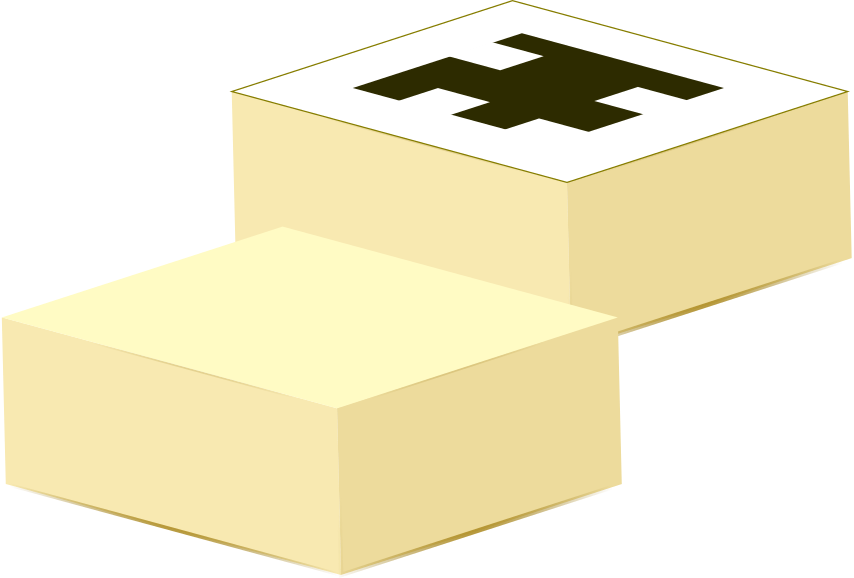
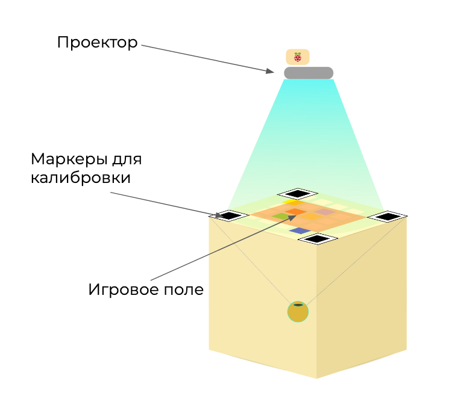
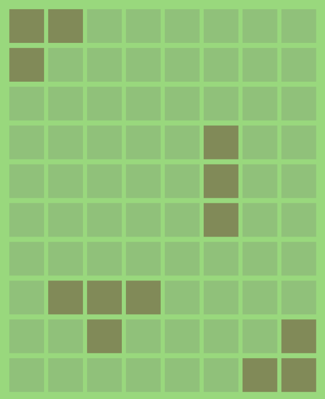
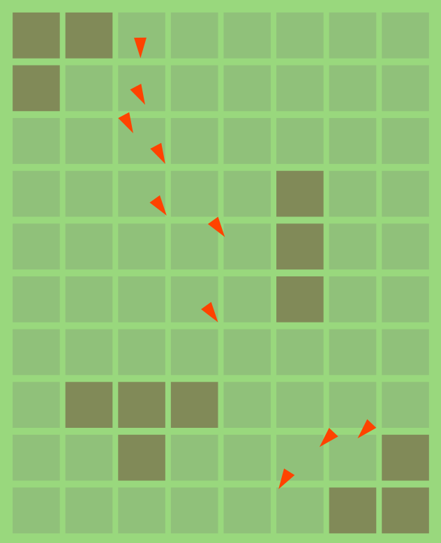
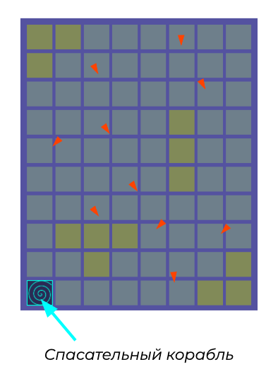
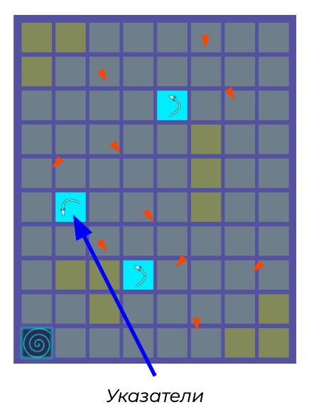
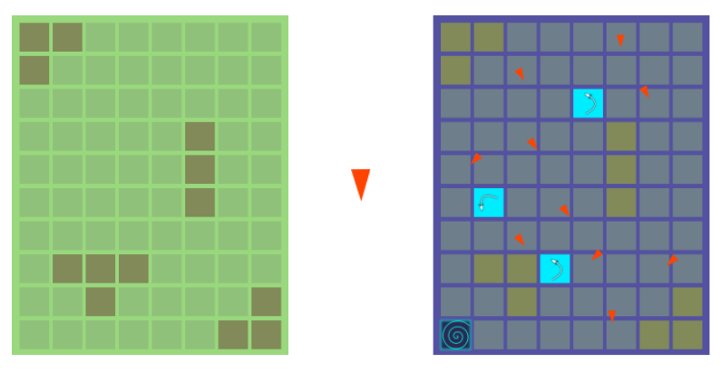

Реализовать игру “Вторжение инопланетян” в смешанной реальности. Разработка должна включать
|

Кубики — игровые объекты |
 |
|  Пример карты города N | — пример человека. Направление острого угла соответствует взгляду человека. |
|  | Есть некоторый город N. В нем живут, беспечные мирные жители, каждый день они ходят на работу, в кино, в школу — ведут спокойную жизнь. |
|  |
Однажды по новостям передали, что на город напали инопланетяне. Где-то в городе есть спасительный корабль, который увезет всех из города через 5 часов. За это время всем людям нужно его найти. В панике люди действуют хаотично и бегают по городу как попало. Поэтому, корабль им найти сложно. |
|  | Поэтому, чтобы помочь людям ориентироваться в хаосе, спасатели устанавливают стрелки-указатели. Они помогают людям изменить направление движения в сторону корабля. |
Расставить указатели таким образом, чтобы за 5 часов* как можно больше людей оказалось на корабле.
* часы в данном случае условные, в реальном времени это может быть 5 сек; коэфициент ускорения относительно реального времени можно задать
Запрограммировать предложенную игру. Реализовать:
Должны быть отрисованы в свободной форме все элементы игры (человечки, поле, корабль, стрелки)
Действия игры должны происходить в смешанной реальности. Должно быть реализовано:
| Лекция | Аудитория | Для кого |
|---|---|---|
| Компьютерное зрение на Python | 402 | Специалист по КЗ, Математик |
| Мультиагентные системы в GameDev | 403 | Специалист по GameDev, Игровой механик |
| Дизайн игрового мира | 406 | Дизайнер |
| Лекция | Лектор | Помогаторы |
|---|---|---|
| Компьютерное зрение на Python | Миша Мустакимов | Катя Черногор, Алексей Быков |
| Мультиагентные системы в GameDev | Саша Абдулов | Петя Ширин, Рома Шабанов |
| Дизайн игрового мира | Даша Куставинова |